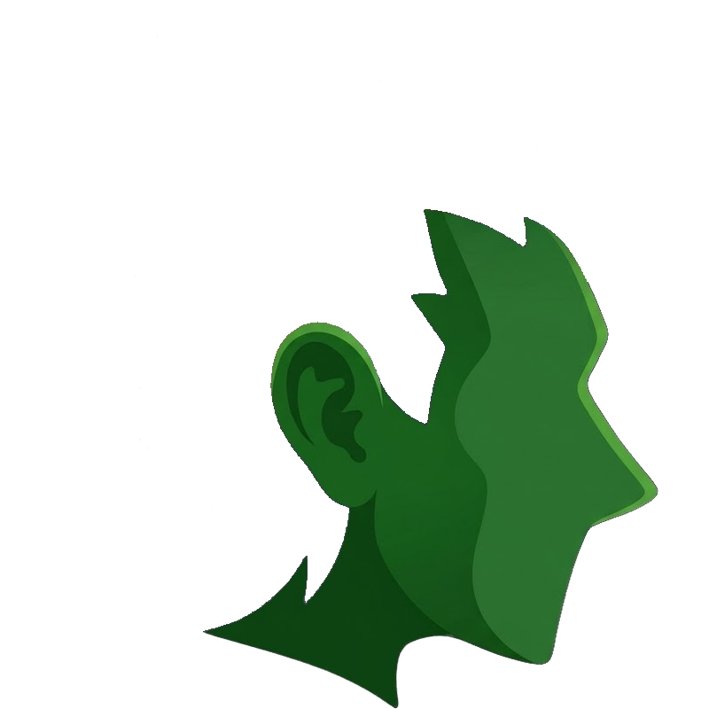

ÉguaTex
Escreva LaTeX de qualquer lugar, mesmo sem internet.
Um programa que escreve e compila TCC, artigos e relatórios, com o PDF ao lado do texto. O compilador LaTeX já vem junto. Gratuito, em português e feito na Amazônia.

Você escreve o texto
Comandos simples de LaTeX, num editor em português, mesmo sem conexão.
A pororoca do Guamá
Paulo Almeida
Belém, 2026
1 Introdução
A pororoca é uma onda de maré que sobe o rio Guamá. Ela nasce da atração entre a Terra e a Lua, dada pela lei de Newton:
1
e o ÉguaTex entrega o PDF
Um clique em Compilar e a página sai pronta, ao lado do texto.
Experimente uma fórmula
Digite LaTeX à esquerda e veja o resultado na hora. É só uma amostra no navegador. No programa você escreve documentos inteiros.

Baixe o ÉguaTex
Procurando a versão mais recente…
- Versão
- Publicada em
- Tamanho
Para Windows 10 e 11, 64 bits. O instalador vem direto do GitHub.
Por que um curupira?
Na lenda, o curupira protege a floresta. Tem o cabelo de fogo e os pés virados para trás, e quem tenta seguir as pegadas dele acaba andando na direção errada.
O ÉguaTex pegou emprestada essa teimosia. LaTeX costuma ser coisa de computador grande, de laboratório, de quem tem tempo e máquina. Aqui a ideia anda ao contrário: o texto científico cabe no computador de casa, funciona sem internet na beira do rio e no ônibus para a UFPA.
E o nome? “Égua” é como a gente diz que algo é bom demais por aqui. Égua, que fórmula bonita.
O que estão achando
Avaliações de quem baixou e usou o ÉguaTex.
…